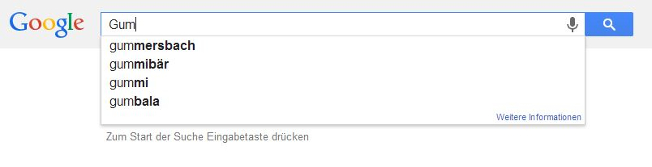
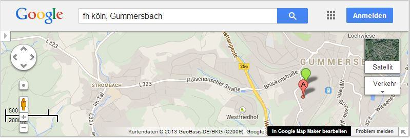

Web-basierte Anwendungen 1
AJAX Basics
31. Oktober 2013
Studiengang Medieninformatik an der Fachhochschule Köln
Campus Gummersbach
Aziz Kilic
Tim Kurtz
Dominik Scharf
Übersicht
Ablauf
- Was ist Ajax ?
- Beispiele
- XMLHttpRequest
- Javascript Object Notation (JSON)
- Cross-Origin Resource Sharing (CORS)
- Nachteile
- Vorteile
Anschließend
- Lernen durch Übungen
1. Was ist Ajax ?
2. Beispiele
Google AutoComplete
GoogleMaps
GoogleMail
3. Pseudoklassen& Pseudoelemente
- beschreiben den Zustand oder eine Eigenschaft eines Elements
- Syntax für Pseudoklassen
selektor:pseudoklasse { ... } - Syntax für Pseudoelemente
selektor::pseudoelement { ... }
Wozu braucht man Pseudoklassen &-elemente nun?
3.1Pseudoelemente
- dienen der Stilisierung der im Markup enthaltenen Elemente durch "Pseudoelemente"
-
::first-line
erste Textzeile des Elements erhält CSS-Eigenschaften -
::first-letter
erstes Zeichen des Textes erhält CSS-Eigenschaften -
::before
fügt Inhalt vor Element ein -
::after
fügt Inhalt nach Element ein
3.2Pseudoklassen für Verweise
aber auch andere Elemente
-
:link
Für Verweise zu noch nicht besuchten Seiten -
:visited
Für Verweise zu bereits besuchten Seiten -
:focus
Für Elemente, die den Fokus erhalten, z.B. durch "Durchsteppen" mit der Tabulator-Taste -
:hover
Für Elemente, während der Anwender mit der Maus darüber fährt -
:active
Für gerade angeklickte Elemente
Beispiel
3.3weitere wichtigePseudoklassen
-
:f
irst-child
spricht das ersteElement an -
:last-child
spricht das letzteElement an -
:nt
h-child(n-te(s) Element(e)
)
spricht n-te(s) Element(e) an


3.4Weitere Pseudoklassen
4.Kombinatoren
- Elemente stehen zueinander in verwandtschaftlicher Beziehung
Bedingungsselektor Zielselektor { ... }
4.1Arten von Kombinatoren
- Nachfahren-Kombinator
- wählt alle direkten& indirekten Nachfahrendes Bedingungsselektors aus, die dem Zielselektor entsprechen
Bedingungsselektor Zielselektor { ... }
- wählt alle direkten Nachfahrendes Bedingungsselektors aus, die dem Zielselektor entsprechen
Bedingungsselektor > Zielselektor { ... }
4.2Arten von Kombinatoren
- Nachbar-Kombinator
- wählt alle direkten Nachbarendes Bedingungsselektors aus, die dem Zielselektor entsprechen
Bedingungsselektor + Zielselektor { ... }
- wählt alle direkten& indirekten folgenden Nachbarendes Bedingungsselektors aus, die dem Zielselektor entsprechen
Bedingungsselektor ~ Zielselektor { ... }
5.Attribut-Selektoren
"Immer wieder soll ein HTML-Element mit CSS-Stilen gezielt ausgewählt und geändert werden. Wenn es eine CSS-Klasse oder ein ID-Attribut gibt, ist das Ansteuern eines HTML-Tags mit CSS einfach."
Aber wie steht es mit einem Element mitten in einer Liste?
a.blue { ... }
entspricht
a[class~="blue"] { ... }
5.1Attribut-Selektoren
|
Passt auf Element a mit Attribut title. |
|
Passt auf Element a mit Attribut title und exakten Wert red. |
|
Passt auf Element a mit Attribut title, dessen durch Leerzeichen getrennte Liste von Werten redenthält. Auch auf Attribut-Wert " redlittle flexible" zutreffend. |
|
Passt auf Element a mit Attribut title, dessen durch Trennstriche (-) getrennte Liste von Werten redenthält. |
|
Passt auf Element a mit Attribut title, dessen Wert mit redbeginnt. Auch auf Attribut-Wert reddishzutreffend. |
|
Passt auf Element a mit Attribut title, dessen Wert mit redendet. Auch auf Attribut-Wert roseredzutreffend. |
|
Passt auf Element a mit Attribut title, dessen Wert redan beliebiger Stelle in Zeichenkette enthält |
6. Spezifität
"Sobald Stylesheets ein bisschen länger werden, gibt es früher oder später für ein HTML-Element mehrere CSS-Regeln, die sich zum Teil widersprechen. Die Frage ist, wie der Browser in solchen Konfliktfällen entscheidet."
Ganz Einfach!
6.1 Spezifität
Der Browser berechnet anhand eines einfachen Punktesystems, welcher Selektor der wichtigste ist
| einfacher Typ-Selektor | p | 1 |
| Klasse | .infobox | 10 |
| Pseudoklasse | :visited | 10 |
| ID | #navibereich | 100 |
| Attribut style = " " | style="color: red;" | 1000 |
6.2 Specifity ||Spezifität ||Spezifizität
Weitere Beispiele &detailierte Erklärungen findet ihr unter:
Spezifität: das Punktesystem für Selektoren
und/oder
Berechnung der Spezifizität mittels Matrizenverfahren (╯°□°）╯︵┻━┻7. Transitions
- ermöglichen es, Änderung eines Elements
von einem Style zum anderemzu steuern
- Solch eine Änderung geschieht beispielsweise beim :hover über ein Element.
--> transition!
<--